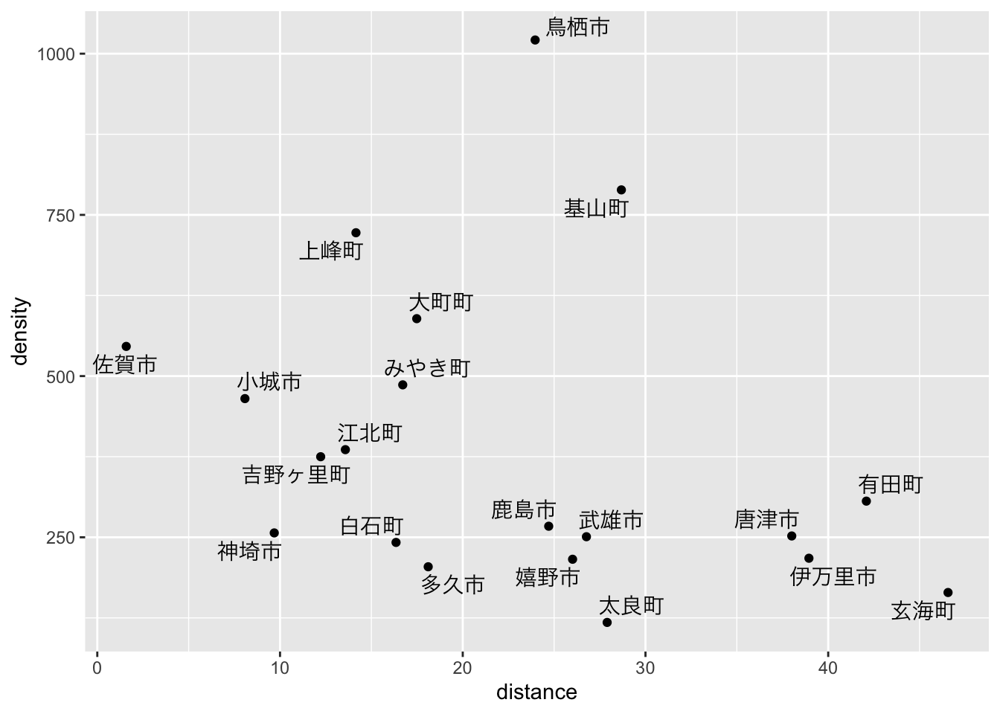
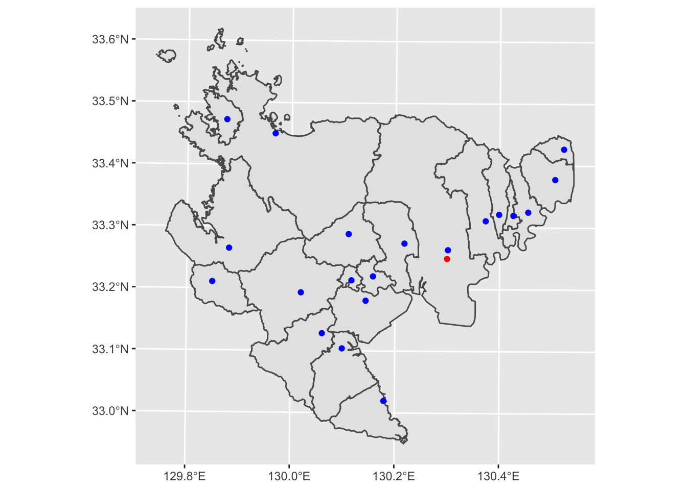

4 地点間の距離
4.1 概要
この章では，GISデータを用いて地点間の距離（直線距離・大圏距離）を測る方法を説明します。 佐賀県庁から，佐賀県の各市役所・町役場までの距離を求めてみましょう。
4.2 データの準備
市町の座標データは，国土交通省の「国土数値情報ダウンロードサービス」で提供されているシェープファイルを使います。
「3.地域」「施設」にある「市区町村役場」から，佐賀県のデータをダウンロードしてください。
ダウンロードしたzipファイルを解凍し，できたP34-14_41_GMLフォルダごとdataフォルダに入れてください。
このように，GeoJSONと異なり，シェープファイルは複数のファイルから構成されていることがわかります。
さて，このデータを読み込むのも，st_read関数です。
関数の引数にフォルダを指定すれば，シェープファイルを読み込んでくれます
（Windowsで作業する場合は，options引数は必要ないかもしれません）。
city <- st_read("data/P34-14_41_GML/", options = "ENCODING=cp932")## options: ENCODING=cp932
## Reading layer `P34-14_41' from data source
## `/Users/kazukitamura/github/giswithr/data/P34-14_41_GML' using driver `ESRI Shapefile'
## Simple feature collection with 65 features and 4 fields
## Geometry type: POINT
## Dimension: XY
## Bounding box: xmin: 129.8098 ymin: 32.97388 xmax: 130.5231 ymax: 33.54343
## Geodetic CRS: JGD2000head(city, 3)## Simple feature collection with 3 features and 4 fields
## Geometry type: POINT
## Dimension: XY
## Bounding box: xmin: 130.2775 ymin: 33.2241 xmax: 130.3526 ymax: 33.31179
## Geodetic CRS: JGD2000
## P34_001 P34_002 P34_003 P34_004
## 1 41201 1 佐賀市役所 佐賀市栄町1-1
## 2 41201 2 諸富支所 佐賀市諸富町大字諸富津1-2
## 3 41201 2 大和支所 佐賀市大和町大字尼寺1870
## geometry
## 1 POINT (130.3008 33.26354)
## 2 POINT (130.3526 33.2241)
## 3 POINT (130.2775 33.31179)読み込んだデータの中身を見ると，P34_001からP34_004までのデータ列と，位置情報であるgeometry列があることがわかります。
P34から始まるデータ列の意味を知りたい場合は，先ほどのウェブページの「属性情報」欄をご覧ください。
順番に「行政区域コード」「施設分類」「名称」「所在地」のデータであることがわかります。
「施設分類」は，1が「本庁（市役所、区役所、町役場、村役場）」，2が「支所、出張所、連絡所」を意味しますが，今回の作業に必要なのは本庁のデータだけなので，そのデータだけ抜き出します。
これは，dplyrライブラリのfilter関数を使うことで実現できます。
city <- filter(city, P34_002 == 1)
head(city, 3)## Simple feature collection with 3 features and 4 fields
## Geometry type: POINT
## Dimension: XY
## Bounding box: xmin: 129.968 ymin: 33.26354 xmax: 130.5062 ymax: 33.4501
## Geodetic CRS: JGD2000
## P34_001 P34_002 P34_003 P34_004 geometry
## 1 41201 1 佐賀市役所 佐賀市栄町1-1 POINT (130.3008 33.26354)
## 2 41202 1 唐津市役所 唐津市西城内1-1 POINT (129.968 33.4501)
## 3 41203 1 鳥栖市役所 鳥栖市宿町1118 POINT (130.5062 33.37776)次に，佐賀県庁の位置データを準備します。 市町のデータと同じように，国土数値情報などのデータを利用してもよいですが， ここでは，データを手作りしてみましょう。
ウェブブラウザで地理院地図を開き，ページ上部の検索ボックスから「佐賀県庁舎」を検索してください。 検索結果欄から「佐賀県庁舎」をクリックすると，佐賀県庁舎を中心とした地図が表示されますので，さらに画面中央の旗アイコンをクリックすると，佐賀県庁舎の緯度軽度が表示されます。

この緯度軽度の数字から，以下のようにst_sfなどの関数を使って，sfオブジェクトを作成します。
さらに，日本測地系（JGD2000，EPSGコード：4612）を指定します
1。
geometry <- st_sfc(st_point(c(130.2991337, 33.24936696)))
pref <- st_sf(name = "佐賀県庁舎", geometry)
st_crs(pref) <- 4612
pref## Simple feature collection with 1 feature and 1 field
## Geometry type: POINT
## Dimension: XY
## Bounding box: xmin: 130.2991 ymin: 33.24937 xmax: 130.2991 ymax: 33.24937
## Geodetic CRS: JGD2000
## name geometry
## 1 佐賀県庁舎 POINT (130.2991 33.24937)4.3 距離の計算
このように，佐賀県内市町と佐賀県庁の座標データが準備できましたので，距離を計算するわけですが，これはsfライブラリのst_distance関数で求めることができます。
st_distance(city, pref)## Units: [m]
## [,1]
## [1,] 1584.224
## [2,] 38005.226
## [3,] 23962.481
## [4,] 18109.154
## [5,] 38944.722
## [6,] 26768.555
## [7,] 24704.188
## [8,] 8080.135
## [9,] 26010.413
## [10,] 9684.116
## [11,] 12225.146
## [12,] 28680.784
## [13,] 14156.415
## [14,] 16715.883
## [15,] 46557.823
## [16,] 42088.235
## [17,] 17481.769
## [18,] 13576.474
## [19,] 16349.074
## [20,] 27902.466この結果を，単位をkmに直したのち，cityデータのdistance列として距離データを追加します。
dist <- st_distance(city, pref)
dist <- units::set_units(dist, km)
city$distance <- as.numeric(dist)
head(city, 3)## Simple feature collection with 3 features and 5 fields
## Geometry type: POINT
## Dimension: XY
## Bounding box: xmin: 129.968 ymin: 33.26354 xmax: 130.5062 ymax: 33.4501
## Geodetic CRS: JGD2000
## P34_001 P34_002 P34_003 P34_004 geometry
## 1 41201 1 佐賀市役所 佐賀市栄町1-1 POINT (130.3008 33.26354)
## 2 41202 1 唐津市役所 唐津市西城内1-1 POINT (129.968 33.4501)
## 3 41203 1 鳥栖市役所 鳥栖市宿町1118 POINT (130.5062 33.37776)
## distance
## 1 1.584224
## 2 38.005226
## 3 23.9624814.4 結果の図示
佐賀県内市町の，佐賀県庁からの距離と人口密度の関係を散布図にしてみましょう。 まず，人口密度と距離が別々のデータに入っているので，それらを結合します。 結合に使う市町村コードが少し違う（佐賀県オープンデータの市町村コードには6桁目にチェックディジットが入っている）ので，小細工しています。
dat3 <- st_drop_geometry(dat2)
dat3$KEY_CODE2 <- str_sub(dat3$KEY_CODE, 1, 5)
dat3 <- left_join(dat3, city, by = c("KEY_CODE2" = "P34_001"))
head(dat3, 3)## KEN_NAME GST_NAME CSS_NAME KEY_CODE 人口総数 市区町村 男 女 世帯総数
## 1 佐賀県 鹿島市 <NA> 412074 29684 鹿島市 13920 15764 10124
## 2 佐賀県 唐津市 <NA> 412023 122785 唐津市 57547 65238 43872
## 3 佐賀県 神埼市 <NA> 412104 31842 神埼市 15172 16670 10913
## area density KEY_CODE2 P34_002 P34_003 P34_004
## 1 111.1131 267.1512 41207 1 鹿島市役所 鹿島市大字納富分2643-1
## 2 487.1607 252.0421 41202 1 唐津市役所 唐津市西城内1-1
## 3 124.0062 256.7776 41210 1 神埼市役所 神埼市神埼町神埼410
## geometry distance
## 1 POINT (130.0986 33.1038) 24.704188
## 2 POINT (129.968 33.4501) 38.005226
## 3 POINT (130.3731 33.31073) 9.684116データができたので，散布図を作成します（Windowsの場合は，family引数は必要ないかもしれません）。
library(ggrepel)
ggplot(dat3, aes(x = distance, y = density)) + geom_point() +
geom_text_repel(aes(label = 市区町村), family = "HiraginoSans-W3") 
ついでに，市町（city）と県庁（pref）の位置を，地図に落としてみましょう。
ggplot() + geom_sf(data = map2) +
geom_sf(data = city, color = "blue") + geom_sf(data = pref, color = "red")
細かいことを言えば，地理院地図の測地系はJGD2011なのですが，西日本地域では両者に差がないので，国土数値情報のデータに合わせて，JDG2000にしておきます。↩︎